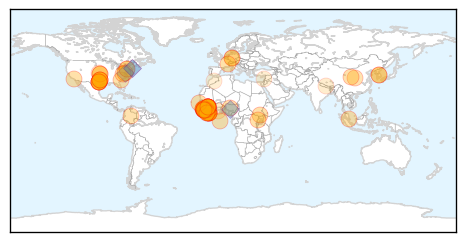

30 Day Trends
Web: 0 alerts, 0 warnings
Twitter: 0 alerts, 0 warnings
47 new deaths (11169 total)
334 new cases (27305 total)
Top Articles:
- 1.000
- Ebola epidemic was disaster for malaria control: study
- 1.000
- Ebola to blame for more malaria deaths in west Africa
- 1.000
- Ebola outbreaks in Senegal and Nigeria now under control, CDC says
- 1.000
- Some Ebola experts worry virus may spread more easily than assumed
- 1.000
- 8th person tested for Ebola in L.A. County is quarantined
- 1.000
- Ebola setback for Sierra Leone as capital records new cases
- 1.000
- Ebola scare ‘hampers malaria fight’ - Africa
- 1.000
- Ebola cases not slowing in Guinea, Sierra Leone
- 1.000
- Ebola cases not slowing in Guinea, Sierra Leone
- 1.000
- News Scan for Jun 24, 2015
- 1.000
- Ebola returns to Sierra Leone's capital: government
- 1.000
- Ebola setback for Sierra Leone as capital records new cases (Update)
- 1.000
- New Ebola cases in Sierra Leone
- 0.999
- Ebola setback for Sierra Leone as capital records new cases
- 0.999
- No plan to close borders
- 0.999
- Ebola Surfaces Again
- 0.999
- Ebola returns to Sierra Leone’s capital: government
- 0.999
- Thousands Of Guinea Malaria Cases Go Untreated Amid Ebola Fears
- 0.999
- Ebola-exposed patient arrives at Maryland clinic
- 0.999
- Ebola: Just When We Thought It Was Over, Another African Country Records 2 Fresh Cases
- 0.999
- ‘No Need to Close Border’: Liberia's Deputy Health Minister
- 0.999
- Malaria killed more people than usual in Ebola outbreak
- 0.999
- CDC: Ready for MERS Outbreak at Home
- 0.999
- Two new cases of Ebola in Sierra Leone crush hopes of virus' defeat
- 0.999
- Malaria killed more people than usual in Ebola outbreak
- 0.998
- Ebola reappears in Sierra Leone's capital after several weeks without new cases
- 0.998
- Fears that Ebola crisis will set back malaria fight
- 0.998
- Three Ebola virus variants identified in Guinea
- 0.998
- Ebola outbreak: New cases in Freetown, Sierra Leone
- 0.996
- Q/A: The search for Ebola vaccine in Uganda
- 0.996
- Dallas-area Africans confront Ebola fears
- 0.996
- Ebola cases not slowing in Guinea, Sierra Leone
- 0.995
- Flight attendants call for tougher Ebola screening
- 0.994
- Three Ebola virus variants identified in Guinea
- 0.993
- Liberia Watches Nervously as Ebola Spreads Near Border
- 0.993
- Sierra Leone Records New Cases Ebola
- 0.991
- Sierra Leone enforces curfew as Ebola virus resurfaces in north west
- 0.989
- Three new Ebola cases reported in Sierra Leone's capital
- 0.988
- Thomas Eric Duncan of Liberia dies of Ebola in Dallas
- 0.988
- Two Doctors in Ebola Fight Named Civil Servants of the Year
- 0.985
- New Ebola cases frustrate hopes of defeating the virus in Sierra Leone (w/video)
- 0.984
- Dallas hospital says Ebola patient denied being around sick people
- 0.977
- Sierra Leone reports 3 new cases of Ebola -
- 0.976
- Three new Ebola cases reported in Sierra Leone's capital - Xinhua
- 0.975
- June 24 news: ACA, malaria, MERS
- 0.973
- Effort to prevent panic over Ebola went too far
- 0.966
- MERS 'suspects' face fines if they don't cooperate
- 0.965
- Ebola epidemic in Guinea may be hurting malaria treatment
- 0.963
- A whisper of hope in Liberia's fight against Ebola deaths
- 0.955
- Sierra Leone Reports 3 Fresh Cases Of Ebola
Showing top 50 articles...
Top Tweets:
- 0.870
- Sad Ebola news: Guinea & Sierra Leone had gone 2 months & 6 wks respectively without healthcare worker infections. Last week there were 3.
- 0.834
- Ebola cases reported in Guinea as people travel worries increase with ... - U.S. News & World Report http://t.co/gTkdbrJaxA ebola EVD
- 0.834
- Ebola cases reported in Guinea as people travel worries increase with ... - U.S. News & World Report http://t.co/LDpfVcKKEV ebola EVD
- 0.813
- UN envoy on Ebola travels to Guinea Bissau after new cases reported in ... - UN News Centre http://t.co/q9H7zfG6DL ebola EVD
- 0.792
- Ebola may have caused spike in Guinea's malaria deaths - Al Jazeera America http://t.co/tx7tn7QR0R ebola EVD
- 0.758
- Effect of the Ebola-virus-disease epidemic on malaria case management in Guinea 2014: http://t.co/EcNG7VaVsn (via)
- 0.738
- Thousands of Guinea malaria cases go untreated amid Ebola fears - The Guardian http://t.co/Ke6IdGnZ9E ebola EVD
- 0.705
- Worrying Ebola news: 50% of the 20 cases reported in the wk to June 21 weren't contacts of known cases. Translation: cases being missed 1/2
- 0.652
- 'It's penis Ebola' - anaesthetist caught verbally abusing sedated patient - TVNZ http://t.co/Sq2aqXTlN0 ebola EVD
- 0.627
- We have lost about 6 out of every 10 of the 807 health workers that caught Ebola in Guinea Liberia and Sierra Leone. http://t.co/D6MFAiIvGU
- 0.613
- RT: .@UNFPA & @WHO co-lead the response for non-Ebola health services in quarantined households. EbolaRespo…
- 0.597
- Ebola undermines health care. Stopping Ebola is key. Malaria services need to resume and expand. http://t.co/cWja8SCSNn
- 0.569
- If Ebola Returns Is Washington Or WHO Any Better Prepared? - Forbes http://t.co/x98KltlQL7 ebola EVD
- 0.549
- Olivia Wilde Spotlights Ripple Effects of Ebola Crisis - ABC News http://t.co/K1HPDb62sI ebola EVD
- 0.525
- Olivia Wilde spotlights ripple effects of Ebola crisis - U-T San Diego http://t.co/9X1HIFvThk ebola EVD
Web/News Articles

Tweets

Human Impact
Article Locations
Article Confidences